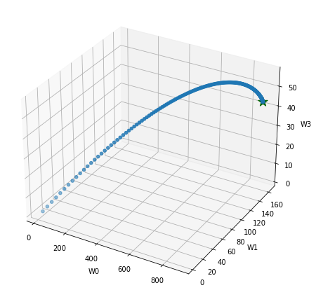
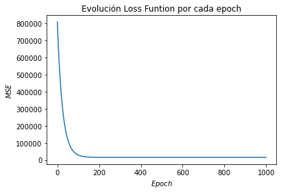
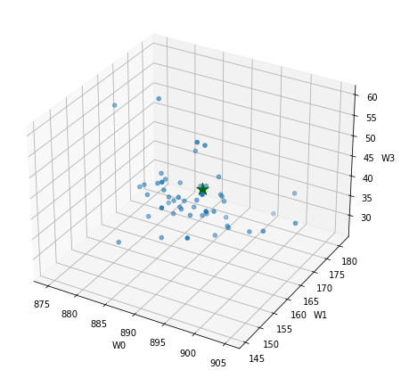
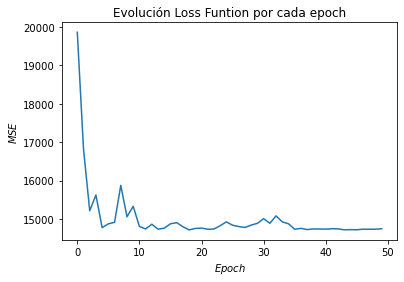
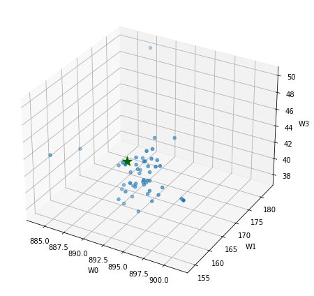
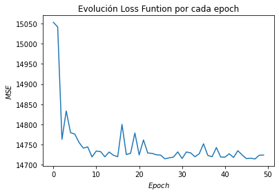

Ejemplo gradiente descendente¶
import numpy as np
import pandas as pd
import matplotlib.pyplot as plt
Importar datos:
df = pd.read_csv("DatosCafe.csv", sep=";", decimal=",")
print(df.head())
Fecha PrecioInterno PrecioInternacional Producción Exportaciones 0 ene-00 371375.0 130.12 658 517.0
1 feb-00 354297.0 124.72 740 642.0
2 mar-00 360016.0 119.51 592 404.0
3 abr-00 347538.0 112.67 1055 731.0
4 may-00 353750.0 110.31 1114 615.0
TRM EUR
0 1923.57 1916.0
1 1950.64 1878.5
2 1956.25 1875.0
3 1986.77 1832.0
4 2055.69 1971.5
Modelo:
\[\hat{y} = +w_1\times Producción + w_2\times EUR +b\]
y = df[["Exportaciones"]]
X = df[["Producción", "EUR"]]
print(y[0:5])
Exportaciones
0 517.0
1 642.0
2 404.0
3 731.0
4 615.0
print(X[0:5])
Producción EUR
0 658 1916.0
1 740 1878.5
2 592 1875.0
3 1055 1832.0
4 1114 1971.5
m = len(X)
m
264
Normalización de los datos:
\[x_i = \frac{x_i-\overline{x}}{\sigma_x}\]
mean = X.mean(axis=0)
X -= mean
std = X.std(axis=0)
X /= std
print(X[0:5])
Producción EUR
0 -1.169135 -1.681368
1 -0.861422 -1.739874
2 -1.416807 -1.745334
3 0.320649 -1.812420
4 0.542052 -1.594781
X_b = np.c_[np.ones((m, 1)), X["Producción"], X["EUR"]]
X_b[0:5]
array([[ 1. , -1.16913522, -1.68136846],
[ 1. , -0.86142167, -1.73987376],
[ 1. , -1.4168071 , -1.74533426],
[ 1. , 0.32064866, -1.81242033],
[ 1. , 0.54205231, -1.59478062]])
Solución analítica de mínimos cuadrados:
\[\hat{W} = \left(X^TX\right)^{-1}X^Ty\]
W_best = np.linalg.inv(X_b.T.dot(X_b)).dot(X_b.T).dot(y)
W_best
array([[891.61310606],
[162.80146402],
[ 43.15212569]])
\[\hat{y} = 162,8\times Producción + 43,2\times EUR + 891,6\]
MSE_best = sum(np.array((X_b.dot(W_best) - y) ** 2)) / m
MSE_best
array([14712.15294164])
Batch Gradient Descent:
\[\eta = 0.01\]
\[iteraciones = 1000\]
eta = 0.01 # learning rate
n_iterations = 1000
W = np.random.randn(3, 1) # random initialization
Ws = np.zeros([3, n_iterations])
for iteration in range(n_iterations):
output = X_b.dot(W)
gradients = 2 / m * X_b.T.dot(output - y)
W = W - eta * gradients
Ws[:, iteration] = W.T
from mpl_toolkits import mplot3d
fig = plt.figure(figsize=(8, 6))
axes = plt.axes(projection="3d")
axes.scatter3D(
Ws[0, :], Ws[1, :], Ws[2, :], cmap=plt.cm.RdYlGn,
)
axes.scatter3D(W_best[0], W_best[1], W_best[2], marker="*", color="darkgreen", s=200)
axes.set_xlabel("W0")
axes.set_ylabel("W1")
axes.set_zlabel("W3")
plt.tight_layout()
plt.show()

MSE = []
for i in range(len(Ws.T)):
MSE.append(sum((X_b.dot(Ws[:, i]) - df["Exportaciones"]) ** 2) / m)
plt.plot(range(len(Ws.T)), MSE)
plt.title("Evolución Loss Funtion por cada epoch")
plt.xlabel("$Epoch$")
plt.ylabel("$MSE$")
Text(0, 0.5, '$MSE$')

min(MSE)
14712.15294185085
MSE.index(min(MSE))
999
Ws[:, MSE.index(min(MSE))]
array([891.61310456, 162.80104591, 43.1525438 ])
W_best
array([[891.61310606],
[162.80146402],
[ 43.15212569]])
Stochastic Gradient Descent:
\[epoch = 50\]
\[iteraciones = 100\]
n_iterations = 100
n_epochs = 50
t0, t1 = 5, 50 # learning schedule hyperparameters
def learning_schedule(t):
return t0 / (t + t1)
W = np.random.randn(3, 1) # random initialization
Ws = np.zeros([3, n_epochs])
etas = []
for epoch in range(n_epochs):
for iteration in range(n_iterations):
random_index = np.random.randint(m)
xi = X_b[random_index : random_index + 1]
yi = y[random_index : random_index + 1]
output = xi.dot(W)
gradients = 2 * xi.T.dot(output - yi)
eta = learning_schedule(epoch * n_iterations + iteration)
W = W - eta * gradients
Ws[:, epoch] = W.T
etas.append(eta)
fig = plt.figure(figsize=(8, 6))
axes = plt.axes(projection="3d")
axes.scatter3D(
Ws[0, :], Ws[1, :], Ws[2, :], cmap=plt.cm.RdYlGn,
)
axes.scatter3D(W_best[0], W_best[1], W_best[2], marker="*", color="darkgreen", s=200)
axes.set_xlabel("W0")
axes.set_ylabel("W1")
axes.set_zlabel("W3")
plt.tight_layout()
plt.show()

MSE = []
for i in range(len(Ws.T)):
MSE.append(sum((X_b.dot(Ws[:, i]) - df["Exportaciones"]) ** 2) / m)
plt.plot(range(len(Ws.T)), MSE)
plt.title("Evolución Loss Funtion por cada epoch")
plt.xlabel("$Epoch$")
plt.ylabel("$MSE$")
Text(0, 0.5, '$MSE$')

min(MSE)
14717.292656273383
MSE.index(min(MSE))
18
Ws[:, MSE.index(min(MSE))]
array([893.05677315, 164.10330922, 43.90785387])
W_best
array([[891.61310606],
[162.80146402],
[ 43.15212569]])
Mini-batch Gradient Descent
\[batch = 12\]
\[epoch = 50\]
\[iteraciones = 1000\]
batch_size = 12
n_iterations = 1000
n_epochs = 50
t0, t1 = 5, 50 # learning schedule hyperparameters
def learning_schedule(t):
return t0 / (t + t1)
W = np.random.randn(3, 1) # random initialization
Ws = np.zeros([3, n_epochs])
etas = []
for epoch in range(n_epochs):
for iteration in range(n_iterations):
random_index = np.random.randint(m - batch_size)
xi = X_b[random_index : random_index + batch_size]
yi = y[random_index : random_index + batch_size]
output = xi.dot(W)
gradients = 2 * xi.T.dot(output - yi)
eta = learning_schedule(epoch * n_iterations + iteration)
W = W - eta * gradients
Ws[:, epoch] = W.T
etas.append(eta)
fig = plt.figure(figsize=(8, 6))
axes = plt.axes(projection="3d")
axes.scatter3D(
Ws[0, :], Ws[1, :], Ws[2, :], cmap=plt.cm.RdYlGn,
)
axes.scatter3D(W_best[0], W_best[1], W_best[2], marker="*", color="darkgreen", s=200)
axes.set_xlabel("W0")
axes.set_ylabel("W1")
axes.set_zlabel("W3")
plt.tight_layout()
plt.show()

MSE = []
for i in range(len(Ws.T)):
MSE.append(sum((X_b.dot(Ws[:, i]) - df["Exportaciones"]) ** 2) / m)
plt.plot(range(len(Ws.T)), MSE)
plt.title("Evolución Loss Funtion por cada epoch")
plt.xlabel("$Epoch$")
plt.ylabel("$MSE$")
Text(0, 0.5, '$MSE$')

min(MSE)
14714.314445750006
MSE.index(min(MSE))
47
Ws[:, MSE.index(min(MSE))]
array([893.0543586 , 163.11032403, 43.09734125])
W_best
array([[891.61310606],
[162.80146402],
[ 43.15212569]])